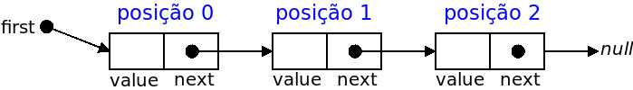

Use como base a classe SinglyLinkedList<T> (descrita no exercício 1 da aula prática 06 - não esquecer da classe Node) que implementa uma lista ligada simples e tem disponíveis métodos para adicionar ou remover um elemento no início ou no final, devolver o tamanho, saber se a lista está vazia ou retornar representação em string para escrita (tal como dado nas aulas).
Acrescente à classe dada um novo método public T remove(int pos) que remove e devolve o elemento na posição pos (assuma que as posições começam em zero). Se a posição não existir, o método não deve alterar a lista e deve devolver null.
Se submeter no Mooskak, deverá submeter apenas a classe SinglyLinkedList<T>, acrescentando o método remove como pedido (e sem apagar nenhum dos outros métodos dados como base). Pode assumir que terá acesso no Mooshak à classe Node<T> (não a pode mudar) e se precisar pode criar outros métodos auxiliares. O Mooshak irá criar várias instâncias da sua classe e irá fazer uma série de testes ao método por si implementado.
| Lista inicial | Chamada | Valor de retorno | Estado da lista depois da chamada |
|---|---|---|---|
| list = {2,4,6} | list.remove(0) | 2 | list = {4,6} |
| list = {'a','b','c','d'} | list.remove(2) | 'c' | list = {'a','b','d'} |
| list = {"estruturas","de","dados"} | list.remove(3) | null | list = {"estruturas","de","dados"} |
| list = {"estruturas","de","dados"} | list.remove(-1) | null | list = {"estruturas","de","dados"} |
Conteúdo de Fernando Silva (DCC/FCUP), migrado de dcc.fc.up.pt/~fds/aulas/EDados/2526/praticas/problems/prob189.html.